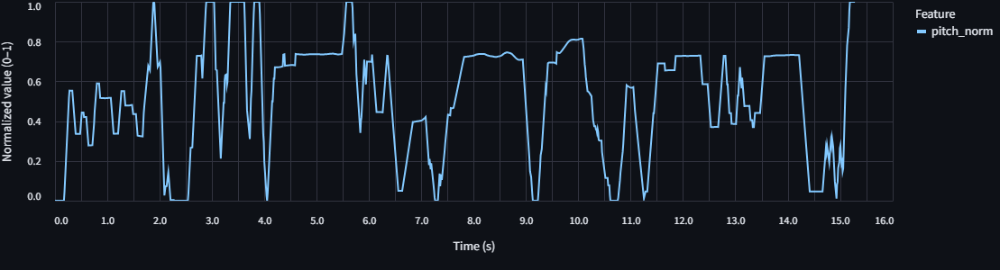
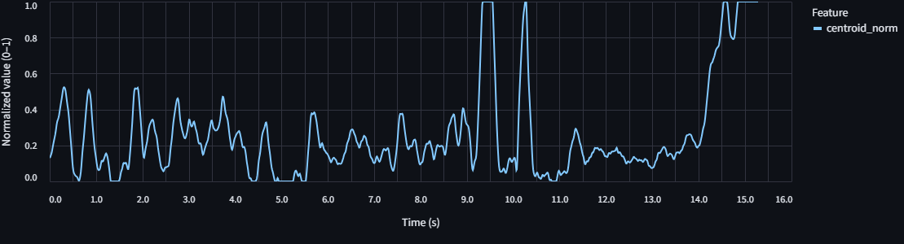
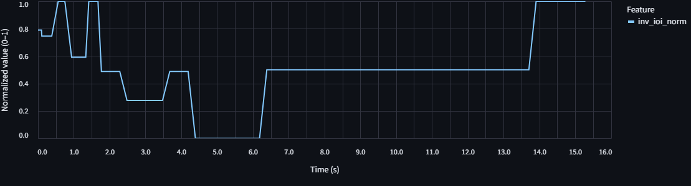
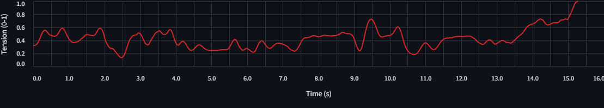
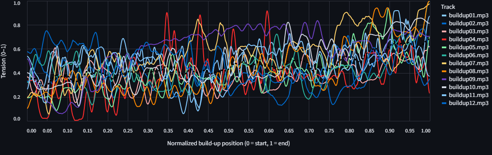
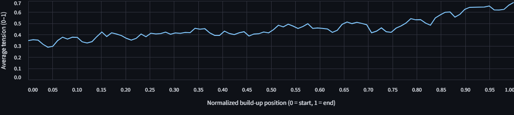

A Computational Model for Predicting Perceived Tension in Electronic Dance Music Build-ups
Description
This study presents a computational model for analyzing musical tension in Electronic Dance Music (EDM) build-up sections through the lens of Gestalt principles. The proposed system extracts three key audio features: pitch proximity violation, timbral similarity violation, and temporal proximity increase to quantify the systematic violation of perceptual grouping principles that create tension in EDM build-ups. Using the YIN algorithm for pitch detection, spectral centroid analysis for timbral brightness, and inter-onset interval analysis for rhythmic density, the model computes a composite Tension Index that represents the perceptual buildup of energy over time. The implementation successfully demonstrates the feasibility of operationalizing Gestalt principles in computational music analysis, providing a foundation for understanding how violations of perceptual expectations create musical tension in dance music contexts.
Introduction
The perceived need for
release, referred to as musical tension,
is a fundamental dynamic, which is especially
crucial and explicit in Electronic Dance Music (EDM).
The genre's primary goal is to elicit a powerful emotional
and physiological response on the dance floor,
which it achieves through the masterful manipulation
of tension and release.
The quintessential structure of modern EDM centers
on the large-scale "build-up" and "drop" cycle.
The build-up is a dedicated section,
usually 8 to 16 bars, that systematically introduces
musical elements to heighten anticipation and intensity.
The subsequent drop provides the cathartic release as
the main beat and bassline return with full force.
The drop's perceived impact is not intrinsic. It is profoundly
magnified by the preceding build-up.
Historically, this structure evolved from the continuous
grooves of early house and techno to the more pronounced
breakdowns of 1990s trance, which proved highly
effective in creating peak emotional experiences for large audiences.
Understanding why build-ups work requires a perceptual framework.
Music perception is not passive but an active organizational
process known as Auditory Scene Analysis (ASA),
which is governed by Gestalt principles.
Gestalt theory posits that the brain automatically
organizes sensory input into coherent "gestalts," or wholes.
The core principle, Prägnanz, is the brain's innate preference
for the simplest, most stable, and most orderly interpretation
of sensory data.
This relies on subsidiary principles, including:
- Proximity: Grouping elements that are close in time or pitch.
- Similarity: Grouping elements that share features like timbre or loudness.
- Continuation: Perceiving elements that form a smooth line as a single entity.
Hypothesis
The perceived increase in musical tension during an Electronic Dance Music build-up is directly correlated with the degree to which core musical elements systematically violate the Gestalt principles of pitch proximity, timbral similarity, and temporal proximity. A computational model that quantifies these violations through audio feature extraction will produce a tension profile that reflects this perceptual arc.
Theoretical Foundations and Related Work
Musical tension is fundamentally rooted in expectation. An EDM build-up purposefully establishes and then delays an expected climactic event, known as the drop, thereby increasing arousal. This psychological manipulation has a clear neurochemical basis. The anticipation of the drop triggers an initial dopamine release in the brain's reward centers. The drop itself serves as the powerful resolution that fulfills this chemically primed expectation, resulting in a euphoric dopamine flood. This effect is further amplified by contrastive valence: the negative, tense state of the build-up makes the subsequent positive release of the drop feel more potent. Producers employ a standard toolkit to achieve this effect:
- Filtering: High-pass filter sweeps progressively remove low frequencies.
- Rhythm: Accelerating snare rolls increase event density.
- Pitch: Synthesized "risers" with continuously ascending pitch.
- Techniques that include increasing reverb decay, momentary silences, or strategic volume drops immediately before the drop to maximize its impact by contrast.
Track selection and Pre-Processing
The development and analysis of the model were conducted on a curated corpus of audio material. The
corpus consists of 12 commercially produced EDM tracks selected from genres known for their prominent
and highly structured build-up sections, namely progressive house, bass house, techno, trance, and big
room house. The
selection criteria required each track to feature a clear and well-defined 8 or 16-bar build-up
leading into the main drop.
For each selected track, the build-up section was manually identified and edited into a separate audio
file. This
isolation ensures that the analysis focuses exclusively on the musical phenomena relevant to
tension-building, avoiding
confounding data from other sections of the arrangement.
Prior to feature extraction, all audio files underwent a standardized pre-processing pipeline
to ensure consistency and comparability. Each audio file is loaded using the
librosa library, converted to a monophonic signal, and resampled to a user-configurable sampling rate
(e.g., 22050 Hz, 44100 Hz, or 48000 Hz). The audio was processed in short, overlapping frames. Key
analysis parameters, such as the STFT frame length (e.g., 2048 samples) and hop length (e.g., 256
samples), are user-configurable in the analysis tool.
The analysis was performed on
short, overlapping frames to create a time-series for each feature.
Pitch Proximity Violation (The "Riser"):
This feature operationalizes the violation of pitch proximity, as
exemplified by the continuously ascending pitch of a synth riser.
To track this rising pitch, the YIN fundamental frequency \(F_0\)
estimation algorithm was applied. This implementation
specifically targets the most stable tonal element by first applying a harmonic-percussive source
separation (HPSS) and running the YIN algorithm only on the resulting harmonic component of the
signal. The algorithm estimates \(F_0\) for each analysis frame. Unvoiced frames (those with low
periodicity) are set to 'Not a Number' (NaN) to be excluded from later calculations.
The raw \(F_0\) time-series is first smoothed using a NaN-aware moving average filter with reflect
padding to reduce spurious fluctuations. The smoothed curve is then normalized.
Timbral Similarity Violation (The "Filter Sweep"):
This feature quantifies the violation of timbral similarity caused by the
timbral brightening effect of a high-pass filter sweep.
The Spectral Centroid was calculated for each audio frame using
librosa.feature.spectral_centroid. The spectral centroid is
defined as the "center of mass" of a signal's frequency spectrum. It is calculated as the weighted
mean of the frequencies present in the spectrum, where the magnitude of each frequency serves as its
weight.
The formula is:$$C = \frac{\sum_{n=0}^{N-1} f(n)x(n)}{\sum_{n=0}^{N-1} x(n)}$$ where \(x(n)\)
is the magnitude of frequency bin \(n\), and \(f(n)\) is the center frequency of that bin.
The spectral centroid has a strong and robust perceptual correlation with the
"brightness" of a sound. As a high-pass filter's cutoff frequency rises, it removes low-frequency
energy from the signal. This causes the spectrum's center of mass to shift upwards, resulting in a
corresponding increase in the spectral centroid value.
Similar to the pitch feature,
the resulting time-series of spectral centroid values is smoothed using a NaN-aware moving average
filter before being normalized.
Temporal Proximity Violation (The "Snare Roll"):
This feature models the increase in temporal proximity (or decrease in the
time between events) that characterizes rhythmic acceleration, such as a snare roll.
The feature is calculated as the inverse of the Inter-Onset Interval (IOI) through a multi-step
process.
An onset detection function (librosa.onset.onset_strength followed by
librosa.onset.onset_detect) is applied to the audio signal to identify the precise time
points of
percussive events.
The time difference between each consecutive pair of detected
onsets is calculated, yielding a series of Inter-Onset Intervals (IOIs).
The feature is computed as the inverse of the IOI: \(IOI^{-1}\).
To generate a continuous time-series, this
\(IOI^{-1}\) value is assigned to all analysis frames that fall within a symmetric time window (e.g.,
2.0 seconds, user-configurable) centered on the start of that \(IOI\). This creates a
step-function-like
series where the rhythmic density value is updated at each new onset.
This step-function series is then smoothed with a NaN-aware moving average filter to blend the
discrete
changes, and finally normalized.
The final output of the model is the Composite Tension Index, a single time-series, \(Tension(t)\), that represents the predicted overall tension at each moment in time. This index is generated by combining the three feature streams. Before combination, each feature stream (pitch, centroid, IOI) is independently normalized using a robust percentile-based method, scaling the 5th percentile to 0 and the 95th percentile to 1. This prevents outlier values from dominating the feature's contribution. The final index is computed as a NaN-aware weighted average, not a simple sum. The user provides weights (\(w_1, w_2, w_3\)), which are first normalized to sum to 1. Then, for each time frame \(t\), the model calculates the tension as: $$Tension(t) = \frac{\sum_{i=1}^{3} w_i \cdot F_{i, norm}(t)}{\sum_{i=1}^{3} w_i \cdot M_i(t)}$$ where \(F_{i, norm}(t)\) is the normalized value of feature \(i\) at time \(t\), \(w_i\) is its normalized weight, and \(M_i(t)\) is a mask that is 1 if the feature is valid (not NaN) at time \(t\) and 0 otherwise. For the purposes of this project, the weights were set to unity (\(w_1 = w_2 = w_3 = 1\)). This simplification assumes an equal contribution from the violation of each of the three Gestalt principles to the overall perception of tension. The implications and limitations of this assumption are explored in the Discussion section of this report. The final \(Tension(t)\) curve is then typically scaled or normalized for clear visualization.
Analysis and Results
To illustrate the model's inner workings, a detailed analysis of a single, representative build-up section from the corpus is considered ("buildup06.mp3"). For this case study build-up, the time-series for each of the three normalized features are visualized, demonstrating how they capture distinct aspects of the tension-building process.
Build-up section from "Alesso Vs OneRepublic - If I Lose Myself (Alesso Remix)"
Pitch Proximity Violation (Smoothed \(F_0\)): The pitch trajectory demonstrates the highest variability of all features. The normalized pitch curve oscillates rapidly throughout the entire time span, with frequent alternations between low and high values. Such fluctuations suggest an unstable melodic structure or the presence of layered risers and harmonically modulated elements. Despite this variability, a general upward tendency emerges in the final seconds, where the pitch curve peaks at its maximum value at around 15 seconds. This final rise represents the culmination of pitch movement, the auditory manifestation of an ascending riser. Rather than a smooth linear ascent, the feature depicts a fragmented, tension-rich pattern marked by intermittent climbs and collapses. This behavior is consistent with production techniques that use pitch modulation, detuning, or gliding effects to maintain continuous anticipation and instability. Figure 1. Normalized Fundamental Frequency (\(F_0\)) trajectory over time, illustrating pitch proximity violation.
Timbral Similarity Violation (Spectral Centroid): The spectral centroid trajectory exhibits a moderate level of fluctuation throughout the first half of the build-up, with alternating rises and drops that suggest subtle variations in brightness rather than a steady increase. Between 8 and 10 seconds, sharp, narrow peaks occur, brief bursts of high-frequency energy likely caused by transient or percussive elements accentuating the upper spectrum. Following these bursts, the centroid briefly stabilizes before undergoing a pronounced upward climb between 13 and 15 seconds, where it reaches its normalized maximum. This late-stage acceleration mirrors the auditory experience of a high-pass filter sweep, where progressively more low frequencies are removed as the build-up nears its climax, producing a perceptual sense of "opening" and intensifying brightness. The data confirm that timbral tension in this track is introduced gradually, punctuated by dynamic surges that contribute to moments of heightened instability before the final rise. Figure 2. Normalized Spectral Centroid trajectory over time, illustrating timbral similarity violation.
Temporal Proximity Increase (\(IOI^{-1}\)): The inverse IOI curve presents a distinct rhythmic progression compared to the other features. Initially, the curve starts high, around 0.8–1.0, reflecting a dense rhythmic texture or rapid onsets at the start of the build-up. A steady decline follows, reaching near-zero values around 5–6 seconds, indicating rhythmic sparsity or a break in percussion. The feature then remains relatively stable at mid-range values (~0.4) through most of the middle section, before surging sharply again around 14 seconds to reach its maximum value. This trajectory indicates that rhythmic density fluctuates in structured phases: an early burst of percussive energy, a relaxed middle phase, and a rapid acceleration toward the end. The final sharp increase corresponds to the characteristic snare roll acceleration that typifies EDM build-ups. The results align with the theoretical premise that temporal proximity violation increases most strongly at the build-up’s final moments, contributing to the sense of urgency immediately preceding the drop. Figure 3. Normalized Inverse Inter-Onset Interval (IOI) trajectory over time, illustrating rhythmic proximity violation.
Visualizing the Build-up Curve
The figure 4. illustrates the output of the model's final stage, a continuous Composite Tension Index calculated as the weighted sum of the normalized pitch, timbral, and rhythmic features over time. The resulting curve captures the dynamic evolution of perceptual tension throughout the sixteen-second build-up, with values normalized between 0 (minimum tension) and 1 (maximum tension).
Figure 4. Composite Tension Index over time.
The curve begins around a moderate tension level (~0.4) and remains relatively stable through the first few seconds, reflecting the perceptual stability of the early build-up phase where the rhythmic grid and timbral content remain consistent. Between 2 and 3 seconds, a slight drop in tension (~0.2) is observed, corresponding to a brief sonic thinning or reduced rhythmic density, a common production technique used to reset the perceptual baseline. From 3 to 9 seconds, the curve oscillates between 0.3–0.5, suggesting alternating minor violations of Gestalt stability through subtle timbral modulations or early filter movements. Around the 9–10 second mark, a pronounced spike (~0.8) emerges, indicating a moment of increased perceptual strain caused by the convergence of multiple factors,often the onset of a snare roll acceleration or intensified high-pass sweep. After this peak, tension briefly subsides (0.3–0.4) before rising again, consistent with dynamic micro-variations in the build-up structure. From 12 seconds onward, a sustained and sharp increase dominates the curve, culminating near 1.0 at 15–16 seconds. This final ascent represents the apex of perceptual instability and anticipatory arousal where pitch, timbre, and rhythm all intensify simultaneously before the imminent drop. The shape thus follows the expected non-linear “accelerating” curve theorized in the model: a relatively steady beginning, mid-level fluctuations, and an exponential climb toward maximum tension.
Comparative Analysis Across the EDM Corpus
The model’s generalizability was evaluated across a corpus of twelve EDM build-up sections drawn from various subgenres, including progressive house, trance, and big room house. Each section was processed through the feature-based system previously described, producing a normalized Tension Index curve for each track. To enable direct comparison, all build-up durations were rescaled to a common temporal axis representing 0–100% of progression time, ensuring structural alignment despite differing bar lengths (8 or 16 bars).
Figure 5. Composite Tension Index curves for all twelve EDM build-up sections, normalized over a common temporal axis.
Figure 6. Average Composite Tension Index curve across all twelve EDM build-up sections.
While the specific shape and steepness of the tension curves are expected to vary between tracks, a consistent overarching pattern of monotonically increasing tension should be evident across the entire catalogue. This would provide evidence for the model's validity as a general descriptor of the build-up process within the selected EDM genres. Any observable differences can be meaningfully interpreted in the context of sub-genre conventions. For example, a classic trance build-up might exhibit a longer, more linear, and gradual tension slope, whereas a big room house build-up might be characterized by a shorter, more explosive, and exponentially shaped curve. Such analysis demonstrates the model's potential not only for confirming a general effect but also for quantifying stylistic differences in musical structure.
Below are the build-up sections used in the analysis:
Build-up 1 – Cascada, Steve Aoki/Everytime We Touch
Build-up 2 – ZERB & The Chainsmokers/Addicted (feat. Ink) [Argy & Omnya Remix]
Build-up 3 – Argy & MEDUZA/Melodia (feat. PollyAnna)
Build-up 4 – Crankdat/B.T.W (The Whistle)
Build-up 5 – Crankdat/Back To You
Build-up 6 – OneRepublic & Alesso/If I Lose Myself (Alesso vs OneRepublic)
Build-up 7 – DubVision/No More
Build-up 8 – Dimitri Vegas & Like Mike/Find Tomorrow (Ocarina)
Build-up 9 – 22Bullets/Remote Control
Build-up 10 – Armin van Buuren & Gryffin/What Took You so Long
Build-up 11 – Gareth Emery & STANDERWICK/ Saving Light (feat. HALIENE)
Build-up 12 – Canonblade/Debug
Discussion
The results generated by the model, particularly the consistent, accelerating arc of the Composite
Tension Index, support the project's central hypothesis. The rising index can be interpreted as more
than a simple description of acoustic signal properties. It represents a quantitative model of a
listener's underlying perceptual and cognitive state during the build-up. The model provides an
objective correlate to the subjective experience of mounting excitement and anticipation.
This interpretation is grounded in the Gestalt framework that motivated the model's design. The
increasing Tension Index reflects the escalating "perceptual strain" placed upon the auditory system.
As the synth riser violates pitch proximity, the filter sweep violates timbral similarity, and the
snare roll violates temporal proximity, the brain must expend increasing cognitive resources to parse
an auditory scene that is actively resisting its innate organizational heuristics. The peak of the
tension curve represents the point of maximum perceptual instability, the moment where the need for
resolution, for a return to a stable, predictable perceptual state, is at its highest. The subsequent
drop provides this resolution, collapsing the accumulated perceptual complexity back into a stable,
rhythmically grounded pattern, thereby generating the powerful cathartic release that is the hallmark
of the EDM experience.
Limitations
Two main limitations constrain the model’s precision. First, rhythmic tension is simplified to the inverse Inter-Onset Interval, which captures acceleration but overlooks higher order structures like syncopation or microtiming. Second, all features were equally weighted, an assumption unlikely to match real perceptual salience. Future refinements should apply regression based weighting from listener data and integrate features such as loudness, roughness, or harmonic dissonance.Literature
Barchet, V., et al. (2024). TenseMusic: An automatic prediction model for musical tension. PLoS ONE, 19(1).
Bofill, P. (n.d.). A Theory of Harmonic and Tonal Tensions.
Bouwer, F. L., et al. (2018). The role of accents on and off the beat in rhythm perception: A comparison of musical novices and experts. PLoS ONE, 13(1).
brentspell.com. (2022). Implementing the Yin Pitch Estimator in PyTorch.
Cancino-Chacón, C. E. (2018). Computational Models of Expressive Music Performance: A Comprehensive Survey. Frontiers in Digital Humanities, 5.
Center for Data Science. (2018). CREPE: A Neural Network with Perfect Pitch.
cognitive-ml.fr. (n.d.). Pitch estimation using CREPE.
da Silva, M. C., et al. (2020). Computational Models for Tonal Tension Profile of Chord Progressions. Applied Sciences, 10(23).
Danielsen, A., et al. (2019). Effects of instructed timing and tempo on snare drum sound in drum kit performance.
de Cheveigné, A., & Kawahara, H. (2002). YIN, a fundamental frequency estimator for speech and music. The Journal of the Acoustical Society of America, 111(4), 1917-1930.
de Groot, F., et al. (2023). Interactionally Embedded, Affordance-Driven Gestalt Perception as a Core Mechanism of Multimodal Human Communication. Frontiers in Psychology, 14.
edmprod.com. (n.d.). Making Sense of Tension.
edmtips.com. (n.d.). Tension & Release in Music: The Secret to Emotion.
Foglietti, F. (2016). Automatic Estimation of Rhythmic Complexity.
Ghosh, S., et al. (2017). Gestalt Phenomenon in Music: A Neurocognitive Physics Study with EEG.
GitHub. (n.d.). ABSounds/YIN-Pitch.
Kim, J. W., et al. (2018). CREPE: A Convolutional Representation for Pitch Estimation. ICASSP 2018.
Li, J., et al. (2025). Music Melody Analysis Based on Multimodal Model Feature Fusion. Computer-Aided Design & Applications, 22(S3).
Mearns, L. (2015). Measuring Harmonic Tension in Post-Tonal Repertoire.
medium.com. (2021). Music Information Retrieval: Feature Engineering.
mroy.chez-alice.fr. (n.d.). The Yin Algorithm Documentation.
O'Donovan, D., et al. (2023). Post-processing CREPE for Monophonic Note Segmentation. arXiv:2311.08884.
ravinkumar.com. (n.d.). Audio Feature Extraction.
Reybrouck, M. (1990). Gestalt Concepts and Music: Limitations and Possibilities.
Schubert, E., & Wolfe, J. (2006). Does the spectral centroid predict perceived brightness of single tones?
ScienceOfMusic. (n.d.). Unit 8: Melody and Gestalt Psychology.
Thul, E. (2008). Measures of Musical Rhythm Complexity.
Turrell, M., et al. (2023). Building the Anticipation: How Variation in Tension Relates to Peak-Pleasurable Emotions During Electronic Dance Music Break Routines. Music Perception, 42(3), 256-274.
Wikipedia. (n.d.). Spectral centroid.
Code
A streamlit application for analyzing musical tension and release is available at the following link:
https://stefbil-tensionmodel.streamlit.app/
The code that was developed exclusively for this project can be found in the following GitHub
repository:
https://github.com/stefbil/stefbilmed7SMCP